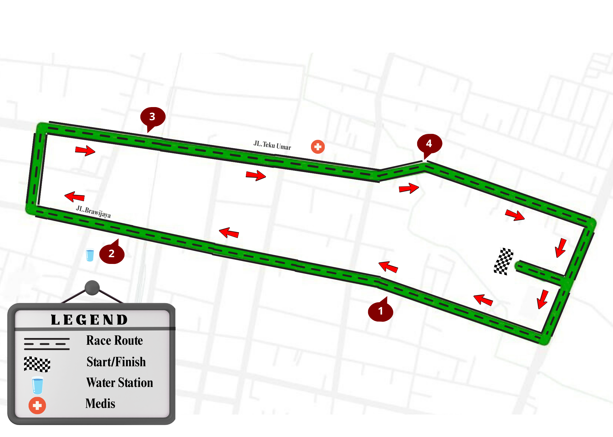
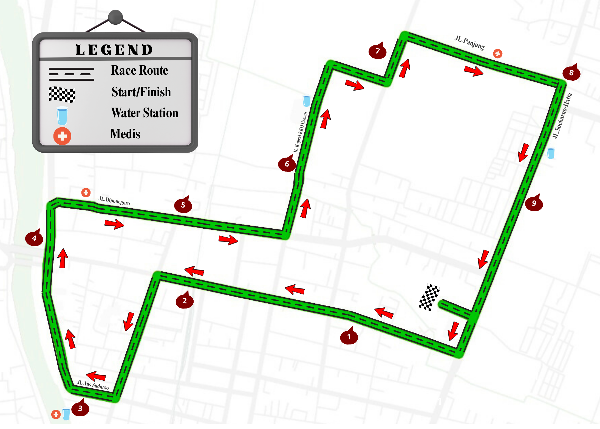

Night Run With The Beauty Of Kediri
Event Dimulai Dalam:

Kediri Nite Run Festival diselenggarakan di Kota Kediri tepatnya di Taman Tirtayasa Kediri, tidak hanya sekadar ajang lari biasa. Kami membawa pengalaman berlari yang berbeda di malam hari, dengan suasana kelap kelip lampu indah Kota Kediri yang membangkitkan semangat para peserta.
Cocok untuk running bareng keluarga atau kalian yang masih pemula bingitts
Uji ketahanan bagi kamu yang sudah terbiasa mengikuti Event running.
| Waktu | Aktivitas |
|---|---|
| 05.00 PM | Open Gate & Registration |
| 06.30 PM | Warming Up |
| 07.00 PM | 10K Race Starts |
| 07.20 PM | 5K Race Starts |
| 09.00 PM |
Awarding, Doorprize, Performance, Guest Star & Closing Ceremony |
Silakan klik tombol di bawah ini untuk mengisi formulir pendaftaran peserta.
Daftar Sekarang
Sponsor Utama